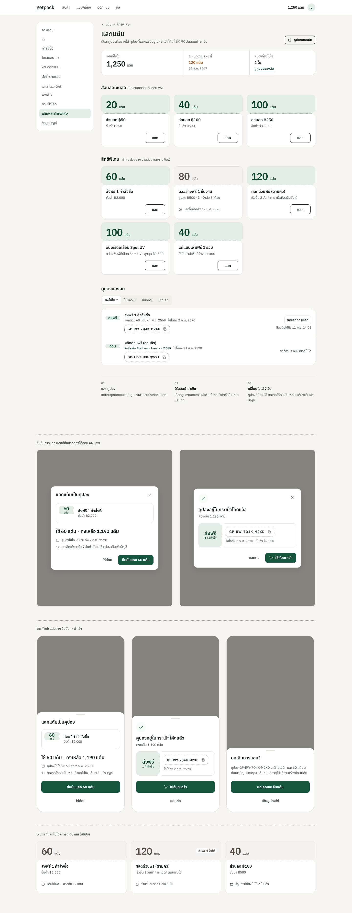
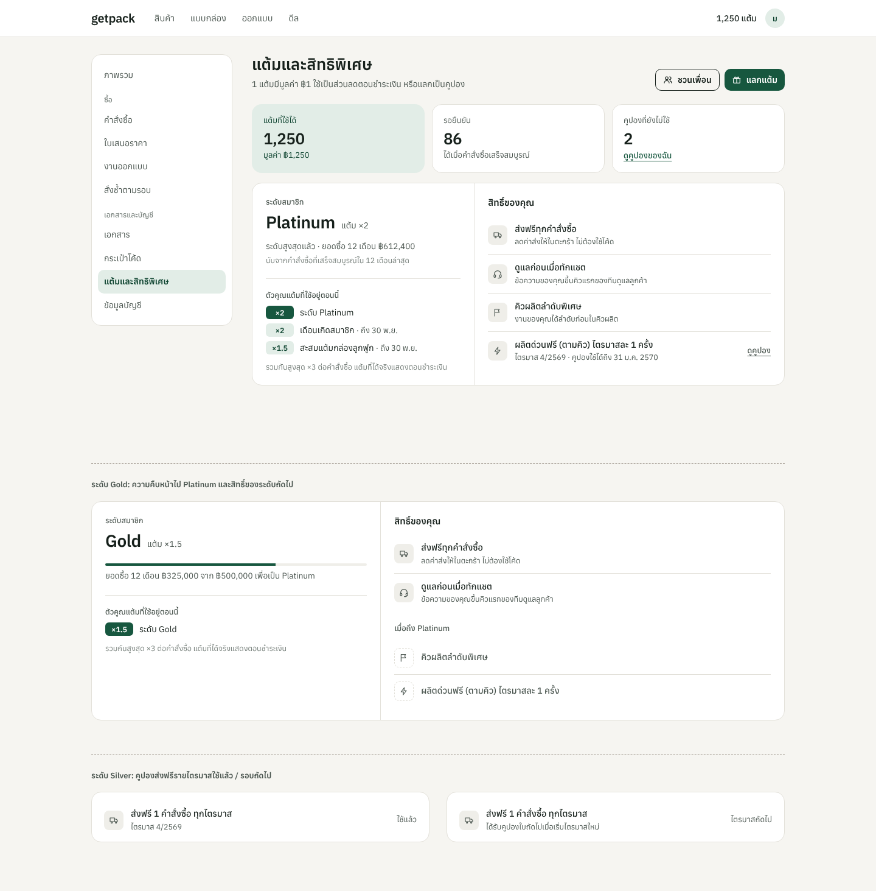
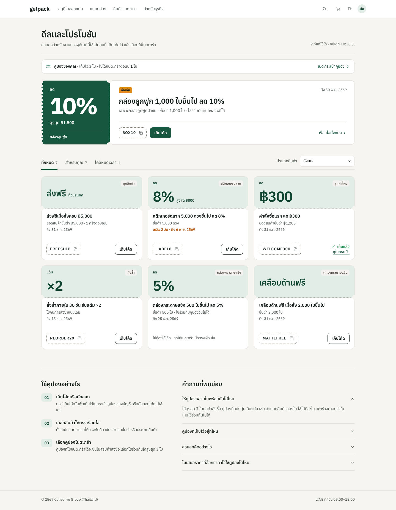
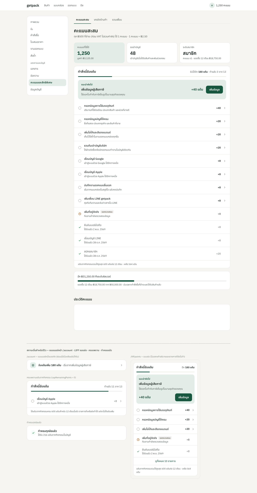
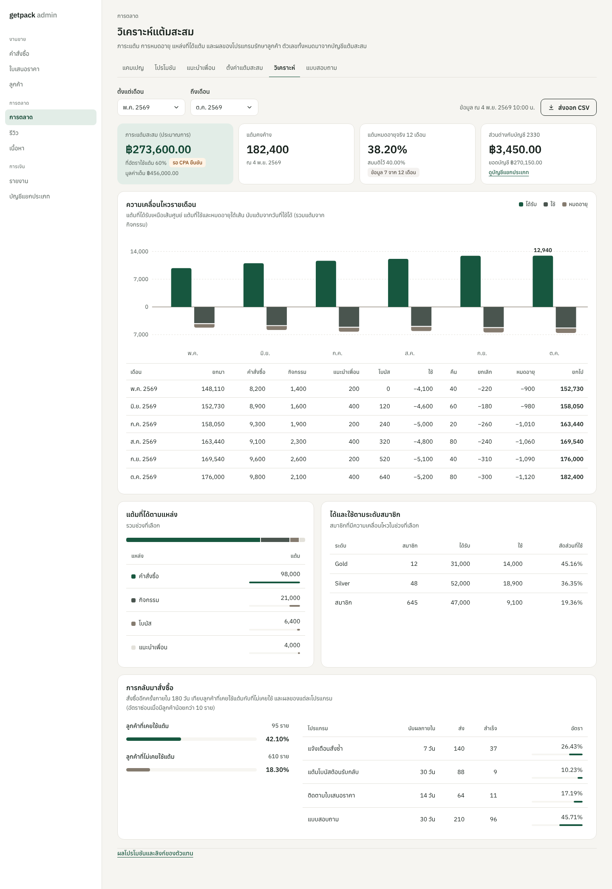

โค้ดเขียนครบตามแผน gate ที่รันใน workspace ผ่านทั้งหมด (lint, targeted typecheck, unit/Vitest และ contract) ยังไม่ได้ push หรือ deploy ส่วนที่ต้องมีฐานข้อมูลจริงและ build เต็มต้องรันบน Mac และ e2e ข้ามตามที่คุณสั่ง
checklist "ทำสิ่งนี้รับแต้ม", แบนเนอร์บน /account, packaging profile, toast +N แต้ม, เพดาน 1,500 บาท
api 417b5a47 · web fb9d1796/deals, การ์ดดีลทรงตั๋ว, badge + volume ladder ใน PDP, ตัวเลือกคูปองในตะกร้า, /liff/deals
api 15e1ed60 · web 136e3733ข้อความตามวงจรลูกค้า, กลุ่มเป้าหมาย, "สำหรับคุณ", แบบสอบถาม และ loyalty analytics
api dd8d2c7f · web baa9a8ecแคตตาล็อกแลกแต้ม, คูปองของฉัน, สิทธิ์รายไตรมาส, capacity deal ที่ต้องอนุมัติ และเพิ่มวงเงินเครดิต
api 77c1c0a0 · web 51df1dcbยังไม่เริ่ม มีบรีฟอยู่ด้านล่าง จะเริ่มเมื่อคุณสั่ง
—




| Gate | ใน workspace | บน Mac |
|---|---|---|
| Lint, Prettier, typecheck เฉพาะไฟล์ที่แก้ | ผ่านทุก phase | รัน pnpm typecheck เต็ม |
| Unit (API) / Vitest (web) | ผ่าน (web 681 tests) | รันซ้ำ |
| gen:api --check, registry, contract:lint | ผ่าน | contract:build แล้ว commit ถ้าเปลี่ยน |
| Migration 03→09, seed ×2, UAT seed, drift check | ไม่ได้รัน (ไม่มี Postgres) | ต้องรัน |
| next build, Storybook, Lighthouse, เทียบกับ prototype | ไม่ได้รัน | ต้องรัน |
| e2e | ข้ามตามที่คุณสั่ง | ไม่บังคับ |
pnpm install && pnpm prisma:generate pnpm typecheck && pnpm lint && pnpm test pnpm contract:build && pnpm contract:lint pnpm db:migrate && pnpm db:seed && pnpm db:seed UAT_SEED_CONFIRM=uat-only pnpm db:seed:uat pnpm launch:settings && pnpm build
pnpm install && pnpm gen:api --check pnpm typecheck && pnpm lint && pnpm test pnpm build && pnpm build-storybook pnpm dev:mock # เปิดหน้าตาม WEB-P3-NOTES §6 แล้วเทียบกับ prototypes/
fix/loyalty-* แล้ว merge ให้loyalty_reward_review และ capacity_deal_publishfree_shipping และ free_rush ใน productionค่าเริ่มต้น: getpack ออกค่าส่วนลดและแต้มเอง 100 % โรงงานไม่ต้องร่วมจ่าย